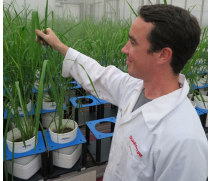
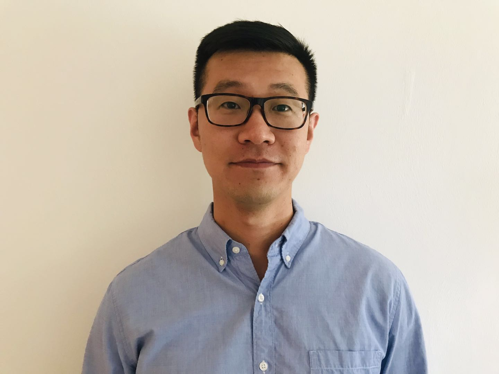
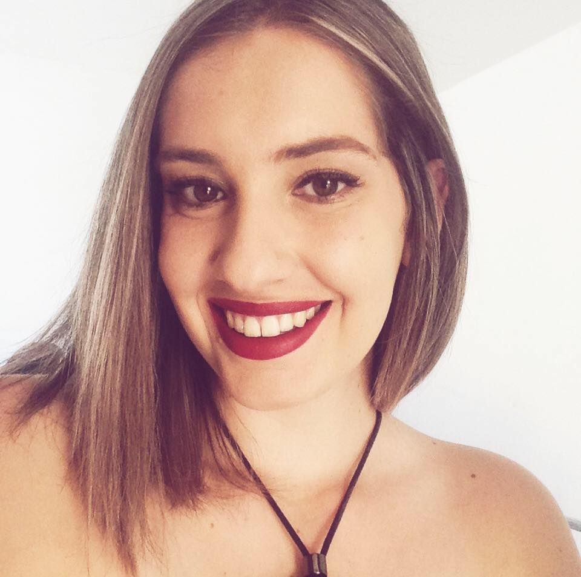
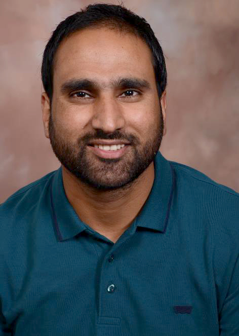
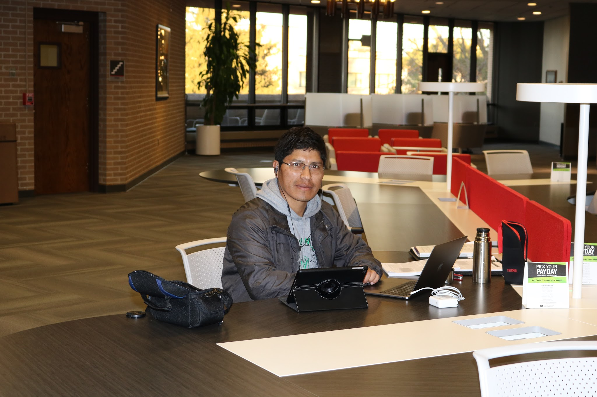

Current members

Malachy T. Campbell - Postdoctoral scholar [WWW]
 Mehdi Momen - Postdoctoral scholar [WWW]
Mehdi Momen - Postdoctoral scholar [WWW]
Toshimi Baba - Visiting scientist [WWW]

Haipeng Yu - Ph.D. student [WWW]

Sabrina T. Amorim - Visiting M.S. student [WWW]
Francisco José de Novais - Visiting Ph.D. student [WWW]
Former lab alumni and visitors

Waseem Hussain - Postdoctoral scholar [WWW]
Sara Pegolo - Visiting postdoctoral scholar [WWW]
Juliana Petrini - Visiting postdoctoral scholar [WWW]

Gerardo Mamani - Visiting Ph.D. student [WWW]
Jun He - Visiting scholar